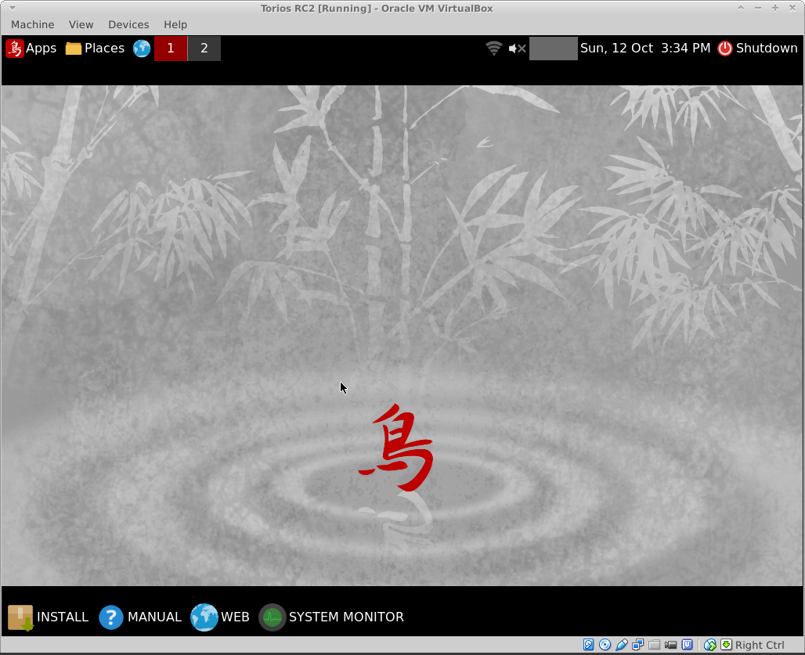
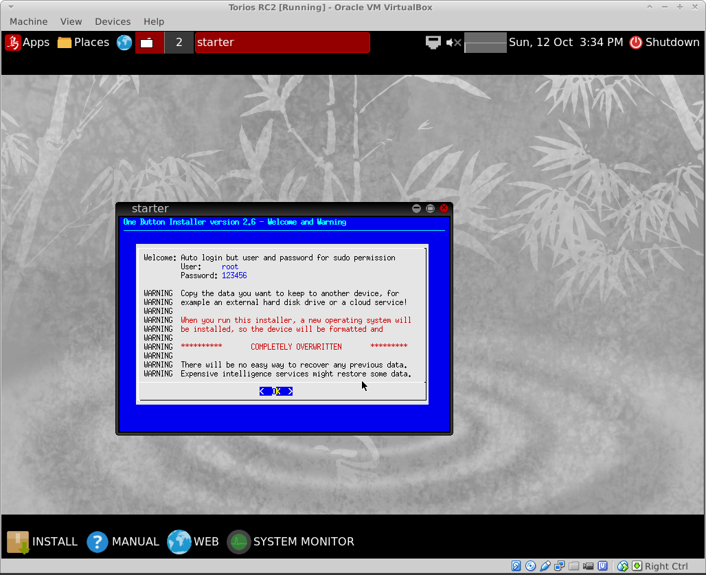
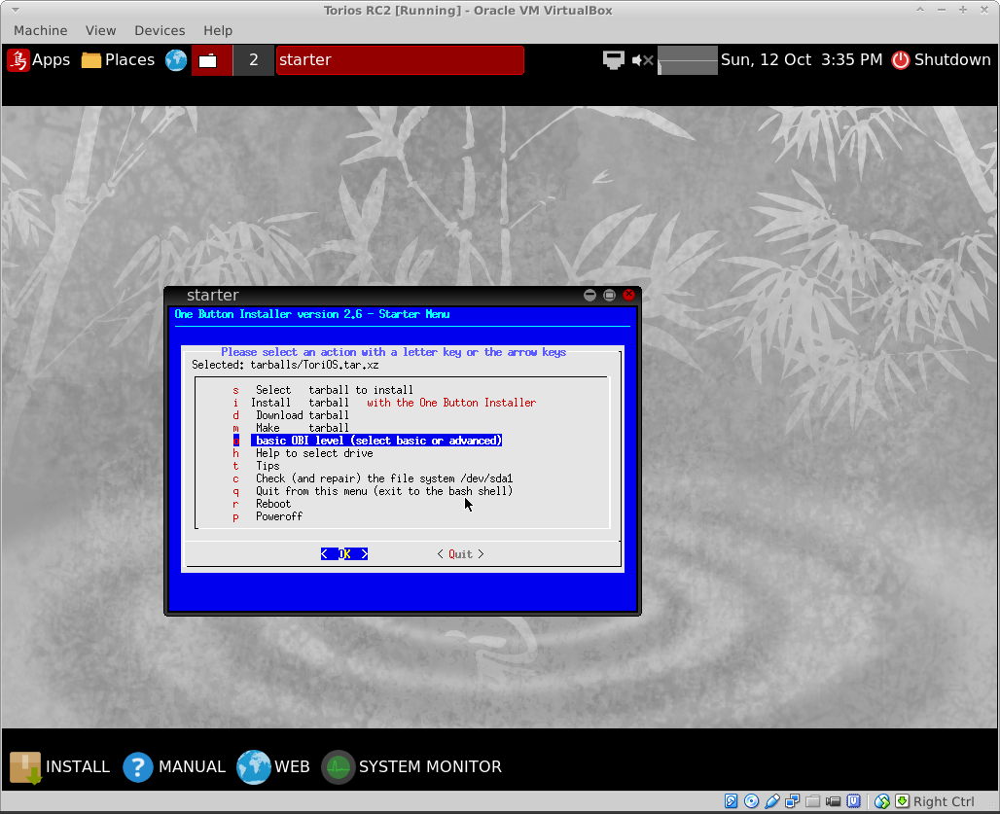
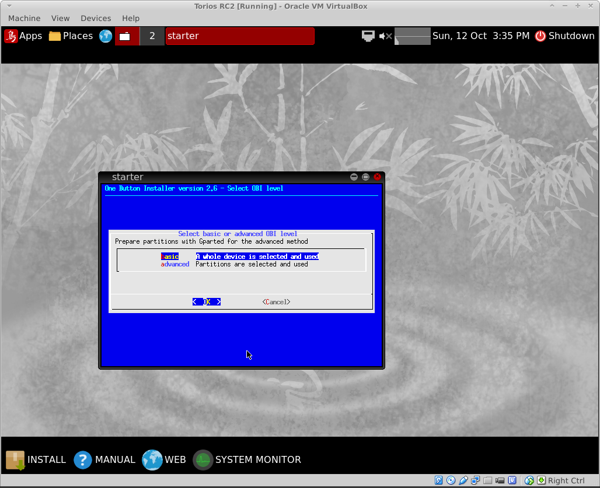
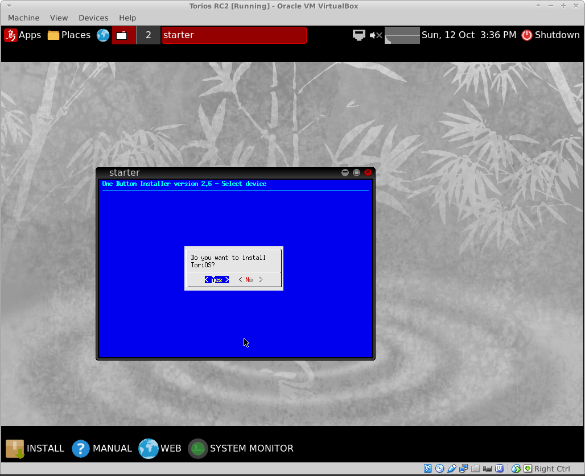
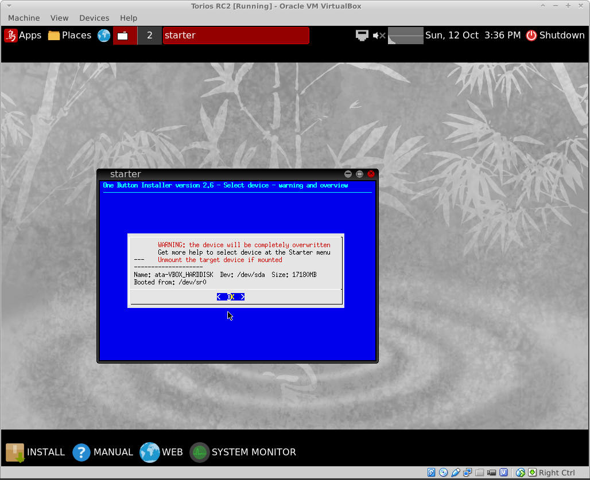
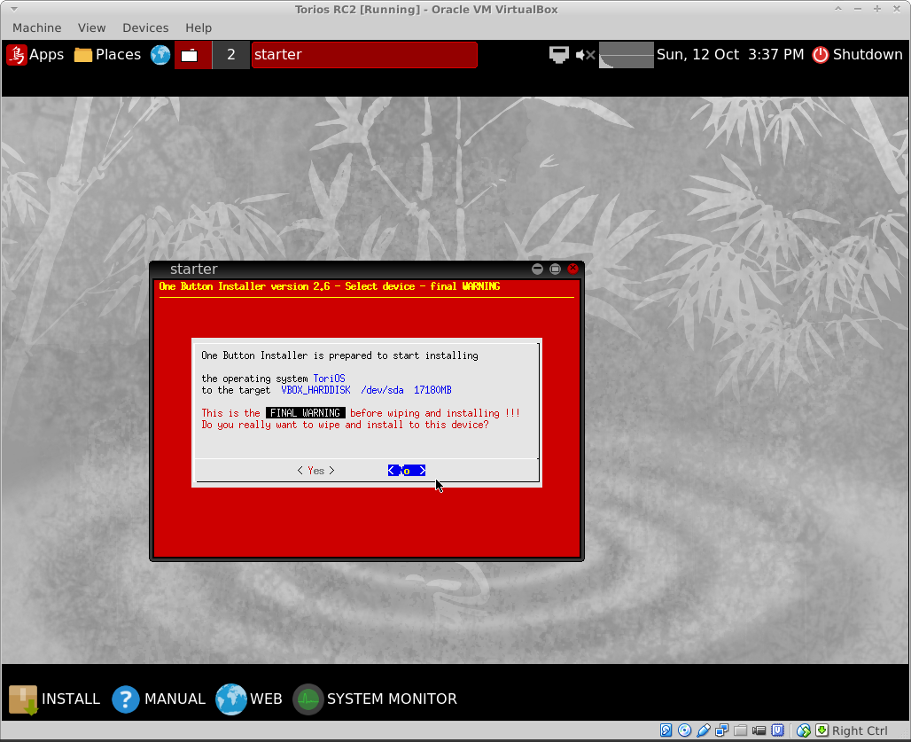
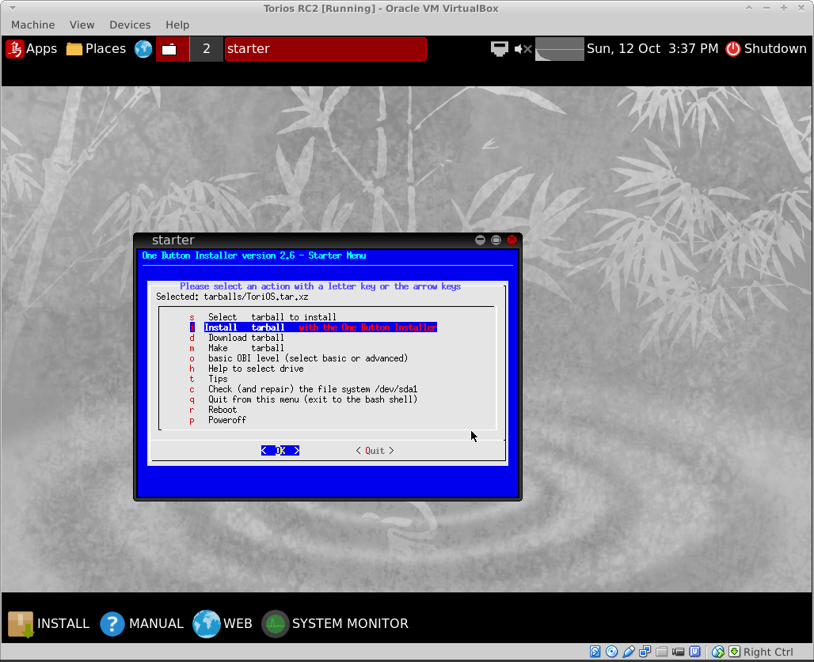

Next: Login Manager
Up: ToriOS Manual
Previous: UEFI Boot
Index
One Button Installer (OBI)
https://help.ubuntu.com/community/OBI
For more help with the One button installer please refer to the OBI- quick start manual. This can be found on the OBI website [15] with a direct link to the manual at [16]. You are STRONGLY ADVISED TO READ THE DOCUMENTATION
Note ; This is based on the RC-2 test version.
I set up virtual box with the default settings (256mb RAM)and added a 16gb virtual hard disk sda.
First step in the process is to boot the iso image, this automatically boots in to the new ToriOS desktop

Note the install button at the http://phillw.net/isos/linux-tools/mkusb/mkUSB-quick-start-manual.pdfbottom of the screen, click this to start the install process.

The initial screen is show here, i accepted all the defaults except right at the very end for the confirm, where I had to manually select (yes)




the next screen has a FINAL RED warning.


Next: Login Manager
Up: ToriOS Manual
Previous: UEFI Boot
Index
geoffrey
2015-01-18